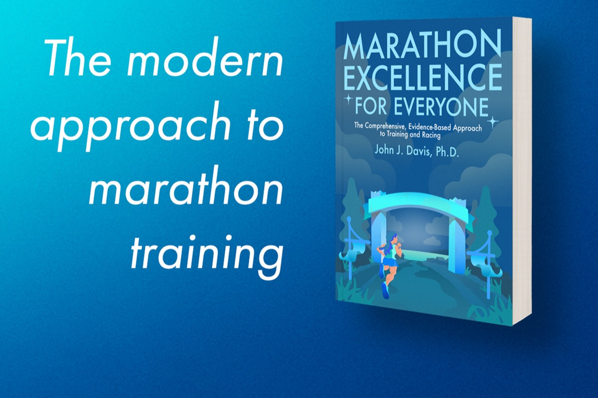

How to use
This app calculates running paces for workouts that are designed to be done at specific percentages of race pace.
For example, if your workout is 4 x 1.25 mi at 95% of 5k pace, and your 5k pace is 5:00/mi, you can enter 95% and 5:00 in the app to find the correct pace for your workout (in this example, 5:15/mi).
If desired, you can also convert your pace to and from mile, kilometer, and 400m splits.
Percentage-based workouts are used by Renato Canova and other top coaches when planning training sessions for some of the best runners in the world.
I've adopted this percentage-based framework in my own coaching and have found it to be an incredibly versatile approach for everything from the 800m to ultra distances.
Calculating paces by hand gets tedious, so I made this app for the two most common use cases: calculating paces and percents "forward" to find workout paces from race pace, and "backward" to find what race pace would result in a given pace and percentage.
Percent of pace vs. percent of speed
There are a few intricacies to calculating percentages; one of these is that percent of speed is not the same thing as percent of pace. See the linked article for an in-depth explanation of why.
Renato Canova's workouts all use percentage of pace. This approach has the advantage of being evenly-spaced and symmetric in increments of pace: 90% of 5:00 mile pace is 5:30, and 80% of 5:00 mile pace is 6:00 (i.e. each 10% jump is 30 seconds per mile). Percent of pace is the approach I use with my own training and coaching.
One consequence of the math behind taking percents of pace is that faster speeds are more finely-grained, which makes intuitive sense from a coaching perspective: effort-wise, there's a much bigger difference between 3:00/km and 3:05/km vs. 4:00/km and 4:05/km. Percent of speed works the opposite way: small percentage jumps are very big at high speeds, which is not desirable.
Scientific research typically uses percent of speed because of speed's linear relationship with distance covered per unit time. Percent of speed is evenly-spaced and symmetric in terms of speed (e.g. each 10% jump is an equal increment in miles per hour).
Do note that neither method is symmetric with respect to the reference speed: 120% of 80% of any speed does not return the original speed, regardless of how you define percentages.
Percentages are better than seconds per mile rules
Percentage-based workout paces have a significant advantage over simple additive rules like "tempo pace equals 5k pace plus 20 seconds per mile." These additive rules fail both for very fast and very slow runners; percentages of pace generalize to a much wider range of abilities.
Forward and backward calculations
Often, you'll have a workout that goes better than expected: suppose you ran five miles at 90% of 5k pace and had a great day, averaging 5:24/mi even though your plan was to run 5:30/mi. You can switch to "reverse mode" (just click the icon) to figure out what original pace would've yielded 5:24 at 90%—in this case, it's 4:55/mi.
Unit conversions
For convenience, I also built in some simple unit conversions. Many of Renato Canova's workouts are kilometer-based, so I like being able to convert to and from miles, kilometers, and (for track workouts) 400m and 200m splits.
You'll notice that the percentage calculations are not affected by the unit conversions—this is by design; 90% of 5:00 is 5:30, regardless of whether that's in minutes per mile, minutes per kilometer, or minutes per 400m and minutes per 200m.
One note: When converting from 400m and 200m paces, decimal mode is automatically enabled to avoid giving the impression of false precision. You can optionally toggle decimal mode off or on with the button for any pace conversion if you are looking for better accuracy.
The 5% rule and other useful conversions
One reason percentages of pace are so convenient is the "5% rule": roughly speaking, a well-trained runner will slow down by 5% for every doubling of race distance. This means that the following approximate race conversions hold:
- 10k pace is 95% of 5k pace
- Half marathon pace is 90% of 5k pace or 95% of 10k pace
- Marathon pace is 95% of half marathon pace, 90% of 10k pace, and (very hesitantly) 85% of 5k pace
Additionally, I find the following (again, approximate) physiologically-based markers to be useful for planning workouts:
- Critical speed / critical velocity is 95% of 5k pace
- Lactate threshold is 91-92% of 5k pace
- Aerobic threshold is 85% of 5k pace
Your individual disposition as a runner, and your training status, will of course push these numbers up or down. As an example, with high school runners I almost always use more like 90-91% of 5k pace for lactate threshold because of "aerobic drift" - compared to more experienced runners, high schoolers run the 5k with greater reliance on their glycolytic energy system, and their performance in longer distances is proportionally worse when compared to more experienced runners with the same 5k PR.
Conversely, I work with some marathon runners who, in top condition, can run the marathon only 3-4% slower than their half marathon pace, and who have a lactate threshold closer to 93% of 5k pace.
Suggested percent-based workouts
Here's a small sample of some of my favorite percentage-based workouts that I use across a wide variety of events:
| Event | Type | Session |
|---|---|---|
| 1500m & up | Aerobic base | 8 x 3 min at 91-92% of 5k pace w/ 45-60 sec jog recovery |
| 5k & up | Aerobic base | 12 mi long fast run at 80% of 5k pace |
| 800m | Endurance | 4-6 x 600m at 80% of 800m pace w/ 1-3 min walk recovery |
| 5k & 10k | Specific | 3 sets of: (2 km at 95% of 5k, 1-2 min jog, 1 km at 98-101% 5k) w/ 3-5min jog recovery |
| Half-marathon | Specific | 10 sets of (1 km at 100-102% HMP, 1 km at 88-90% HMP) |
| Marathon | Endurance | 18 mi long fast run at 90% MP |
Calculator settings
This calculator will remember your settings in your browser's local storage. So, when you come back to the calculator later, you'll be able to pick up where you left off. You can reset all settings to their defaults using the button.
Get updates
If you want to find out when I update this app, or get notified when I build new apps and publish new running research on my website, sign up for my email list with this form!
I have several other apps, tech-based projects and long-format articles on running that are currently in the works. You'll be the first to know when I have new content coming out.
Contact
If you've got feedback, want to see a new feature, found a bug, or just want to chat, please reach out! I read every email I receive, and I do my best to respond. You can reach me at john@runningwritings.com.
I'm also on Twitter/X, but the best way to follow my work is definitely my email list!
Support my work
If you're training for the marathon, be sure to check out my new book, Marathon Excellence for Everyone. It covers the modern approach to marathon training, including training plans, racing strategies, and the latest science on training.
If you live outside of the United States, there is also a Metric Edition of Marathon Excellence available, with all workouts and paces in kilometers!

If you want to learn more about the science of running, you can also check out my first book, Modern Training and Physiology - it covers a scientific approach to training for events from 800m to the 10k. It's available on Amazon as both an eBook and paperback.
This app is 100% free and open-source. If you find it useful, you can share it with your friends or post about it on social media. I also offer coaching services for those interested.